library(readxl)EPPS6356 - Assignment02
Setting
1. Run Murrell’s R Graphics code
Paul Murrell’s R examples
Dot plot
plot(pressure, pch=16) # Can you change pch?
text(150, 600,
"Pressure (mm Hg)\nversus\nTemperature (Celsius)")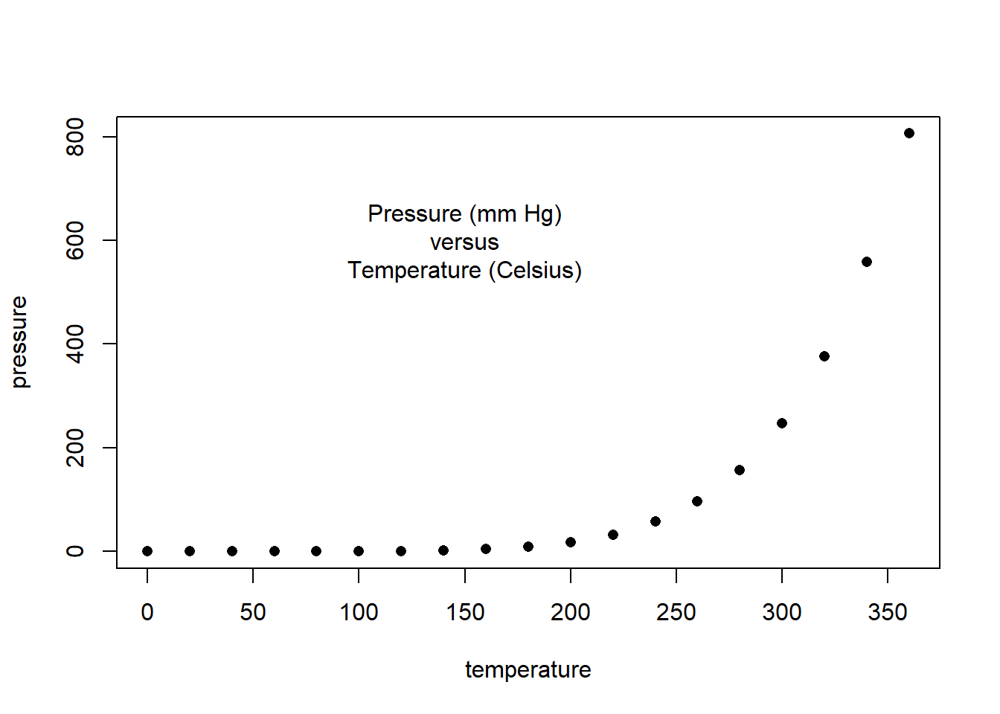
# Change pch
plot(pressure, pch=3, col="darkred", lwd=2) # Change the shape 1
text(150, 600,
"Pressure (mm Hg)\nversus\nTemperature (Celsius)")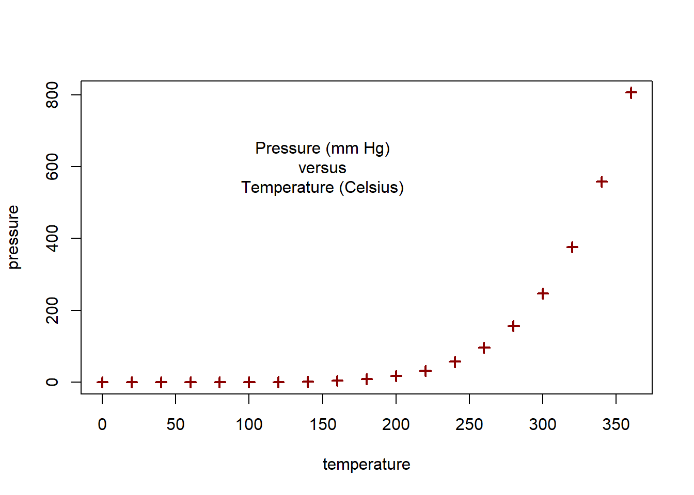
plot(pressure, pch=17, col="darkgreen") # Change the shape 2
text(150, 600,
"Pressure (mm Hg)\nversus\nTemperature (Celsius)")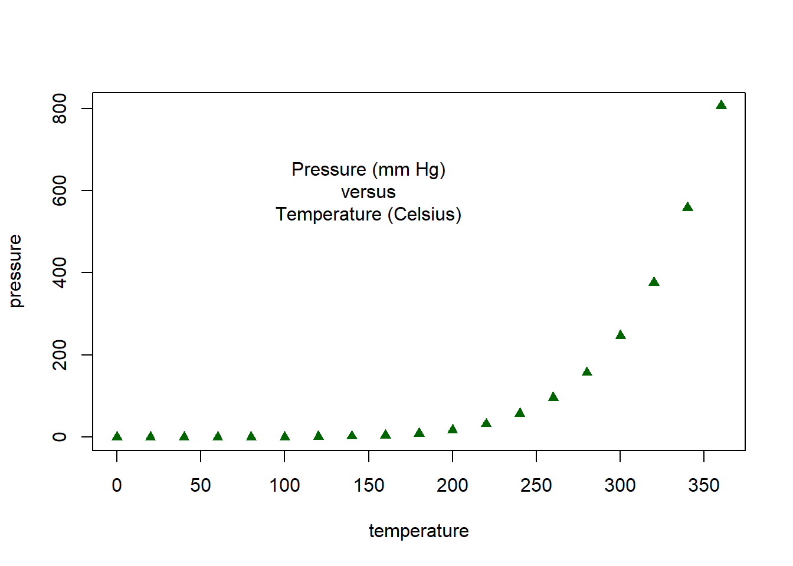
Scatterplot
# Setting the parameter (3 rows by 2 cols)
par(mfrow=c(3, 2))
# Scatterplot
# Note the incremental additions
x <- c(0.5, 2, 4, 8, 12, 16)
y1 <- c(1, 1.3, 1.9, 3.4, 3.9, 4.8)
y2 <- c(4, .8, .5, .45, .4, .3)
# Setting label orientation, margins c(bottom, left, top, right) & text size
par(las=1, mar=c(4, 4, 2, 4), cex=.7)
plot.new()
plot.window(range(x), c(0, 6))
lines(x, y1)
lines(x, y2)
points(x, y1, pch=16, cex=2) # Try different cex value?
points(x, y2, pch=21, bg="white", cex=2) # Different background color
par(col="gray50", fg="gray50", col.axis="gray50")
axis(1, at=seq(0, 16, 4)) # What is the first number standing for?
axis(2, at=seq(0, 6, 2))
axis(4, at=seq(0, 6, 2))
box(bty="u")
mtext("Travel Time (s)", side=1, line=2, cex=0.8)
mtext("Responses per Travel", side=2, line=2, las=0, cex=0.8)
mtext("Responses per Second", side=4, line=2, las=0, cex=0.8)
text(4, 5, "Bird 131")
par(mar=c(5.1, 4.1, 4.1, 2.1), col="black", fg="black", col.axis="black")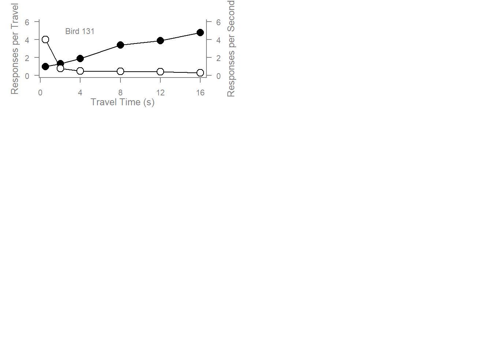
# Note the incremental additions
x <- c(0.5, 2, 4, 8, 12, 16)
y1 <- c(1, 1.3, 1.9, 3.4, 3.9, 4.8)
y2 <- c(4, .8, .5, .45, .4, .3)
# Setting label orientation, margins c(bottom, left, top, right) & text size
par(las=1, mar=c(4, 4, 2, 4), cex=.7)
plot.new()
plot.window(range(x), c(0, 6))
lines(x, y1)
lines(x, y2)
points(x, y1, pch=16, cex=3) # Change cex
points(x, y2, pch=21, bg="orange", cex=4) # Change cex and background color
par(col="gray50", fg="gray50", col.axis="gray50")
axis(1, at=seq(0, 16, 4)) # bottom axis, tick marks at 0,4,8,12,16
axis(2, at=seq(0, 6, 2)) # left axis, tick marks at 0,2,4,6
axis(4, at=seq(0, 6, 2)) # right axis, tick marks at 0,2,4,6 (mirrors the left)
box(bty="u")
mtext("Travel Time (s)", side=1, line=2, cex=0.8)
mtext("Responses per Travel", side=2, line=2, las=0, cex=0.8)
mtext("Responses per Second", side=4, line=2, las=0, cex=0.8)
text(4, 5, "Bird 131")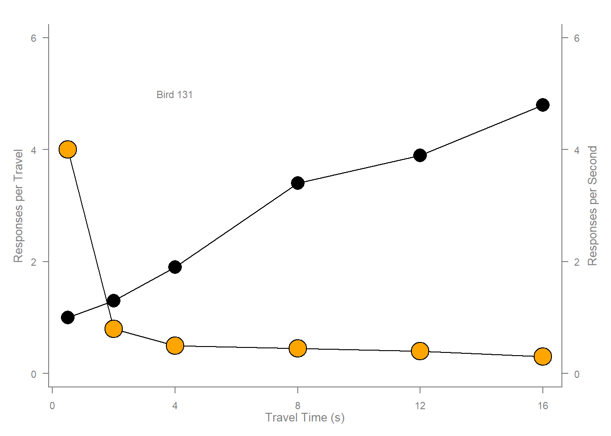
par(mar=c(5.1, 4.1, 4.1, 2.1), col="black", fg="black", col.axis="black")
Histogram
# Random data
Y <- rnorm(50)
# Make sure no Y exceed [-3.5, 3.5]
Y[Y < -3.5 | Y > 3.5] <- NA # Selection/set range
x <- seq(-3.5, 3.5, .1)
dn <- dnorm(x)
par(mar=c(4.5, 4.1, 3.1, 0))
hist(Y, breaks=seq(-3.5, 3.5), ylim=c(0, 0.5),
col="gray80", freq=FALSE)
lines(x, dnorm(x), lwd=2)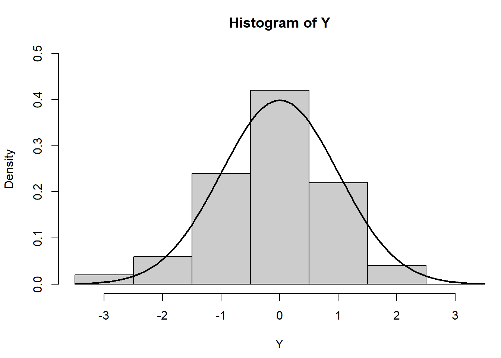
par(mar=c(5.1, 4.1, 4.1, 2.1))
# Random data
Y <- rnorm(50)
# Y exceed [-4.0, 4.0]
Y[Y < -4.0 | Y > 4.0] <- NA # Set range: -4.0 ~ 4.0
x <- seq(-4.0, 4.0, .1)
dn <- dnorm(x)
par(mar=c(4.5, 4.1, 3.1, 0))
hist(Y, breaks=seq(-4.0, 4.0), ylim=c(0, 0.5),
col="lightblue", freq=FALSE) # Set the color on histogram
lines(x, dnorm(x), lwd=2, col="purple") # Set the color on density curve line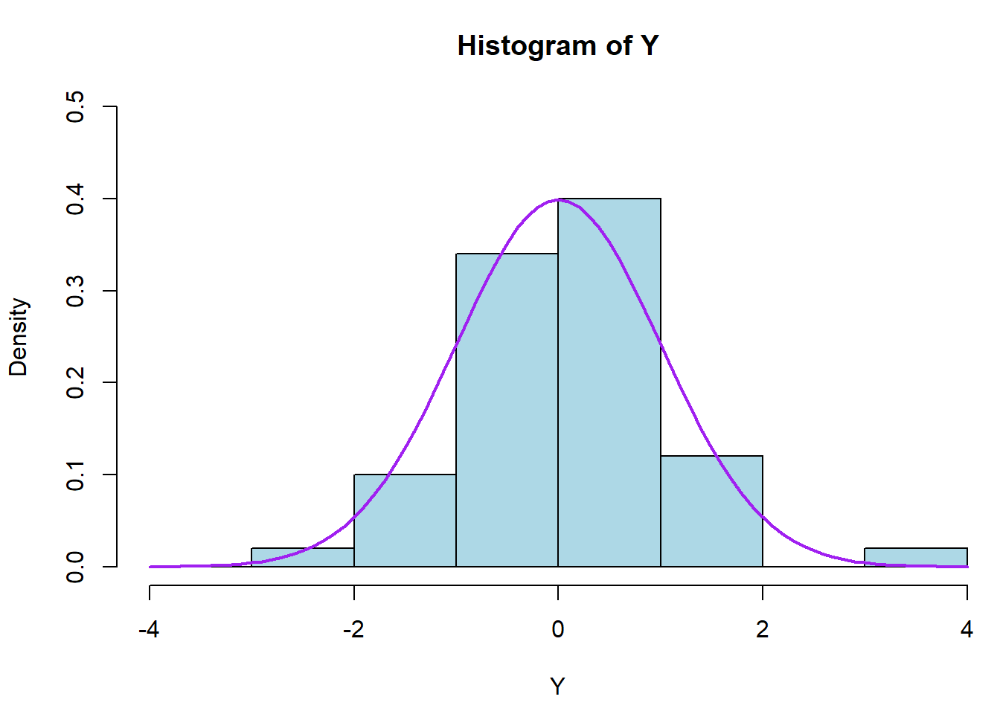
par(mar=c(5.1, 4.1, 4.1, 2.1))
Bar Plot
par(mar=c(2, 3.1, 2, 2.1))
midpts <- barplot(VADeaths,
col=gray(0.1 + seq(1, 9, 2)/11),
names=rep("", 4))
mtext(sub(" ", "\n", colnames(VADeaths)),
at=midpts, side=1, line=0.5, cex=0.5)
text(rep(midpts, each=5), apply(VADeaths, 2, cumsum) - VADeaths/2,
VADeaths,
col=rep(c("white", "black"), times=3:2),
cex=0.8)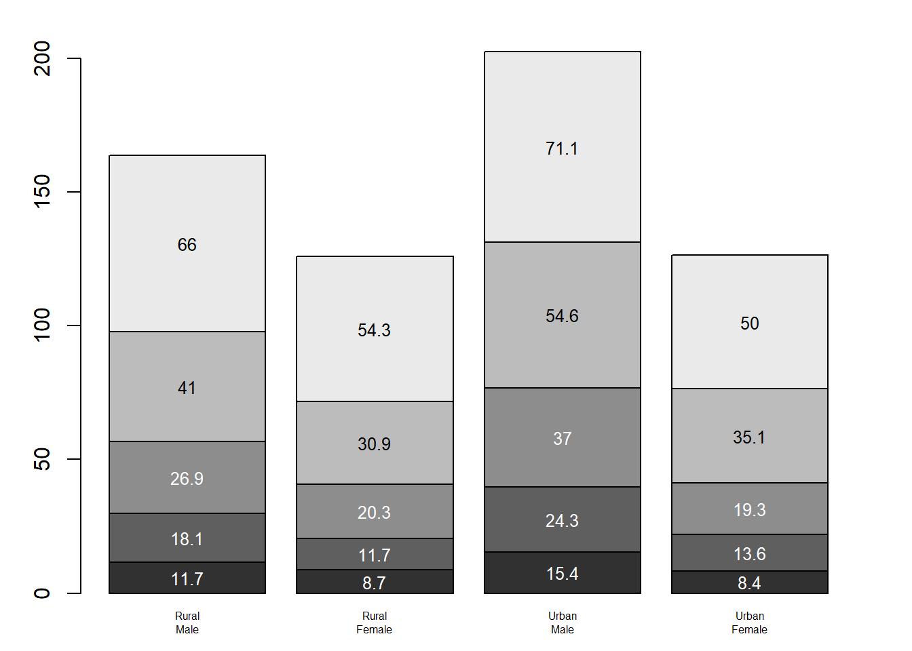
par(mar=c(5.1, 4.1, 4.1, 2.1))
par(mar=c(2, 3.1, 2, 2.1))
midpts <- barplot(VADeaths,
col=colorRampPalette(c("darkgreen", "lightgreen"))(5), # Set the color
names=rep("", 4))
mtext(sub(" ", "\n", colnames(VADeaths)),
at=midpts, side=1, line=0.5, cex=0.5)
text(rep(midpts, each=5), apply(VADeaths, 2, cumsum) - VADeaths/2,
VADeaths,
col=rep(c("white", "black"), times=3:2),
cex=0.8)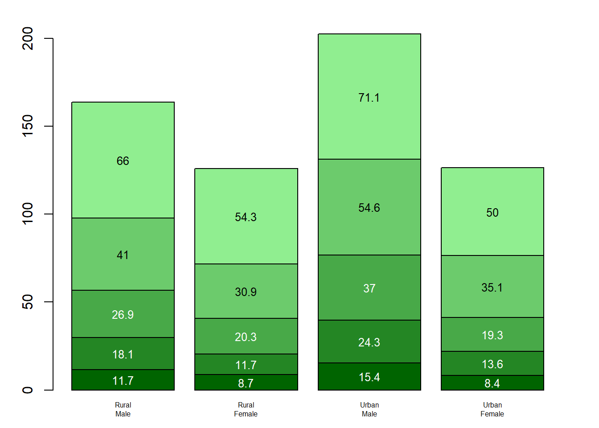
par(mar=c(5.1, 4.1, 4.1, 2.1))
Box Plot
par(mar=c(3, 4.1, 2, 0))
boxplot(len ~ dose, data = ToothGrowth,
boxwex = 0.25, at = 1:3 - 0.2,
subset= supp == "VC", col="white",
xlab="",
ylab="tooth length", ylim=c(0,35))
mtext("Vitamin C dose (mg)", side=1, line=2.5, cex=0.8)
boxplot(len ~ dose, data = ToothGrowth, add = TRUE,
boxwex = 0.25, at = 1:3 + 0.2,
subset= supp == "OJ")
legend(1.5, 9, c("Ascorbic acid", "Orange juice"),
fill = c("white", "gray"),
bty="n")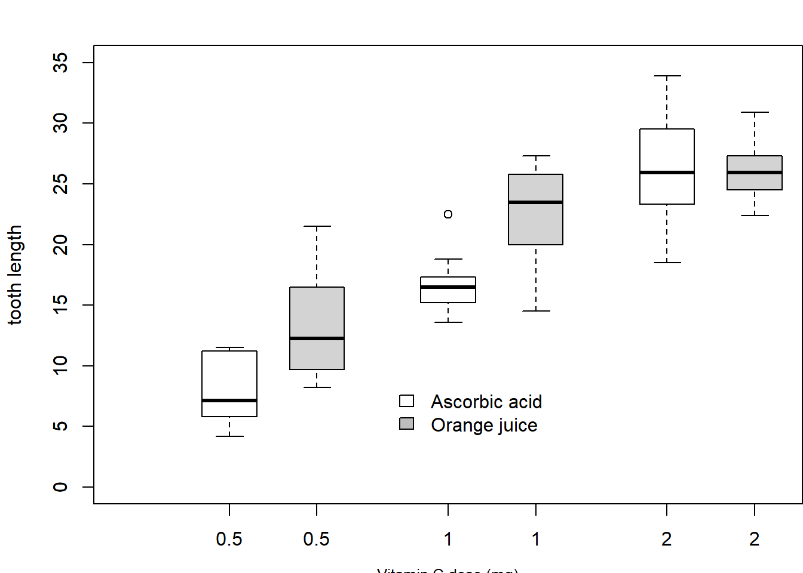
par(mar=c(5.1, 4.1, 4.1, 2.1))
# Set the box Color
par(mar=c(3, 4.1, 2, 0))
boxplot(len ~ dose, data = ToothGrowth,
boxwex = 0.25, at = 1:3 - 0.2,
subset= supp == "VC", col="darkgreen",
xlab="",
ylab="tooth length", ylim=c(0,35))
mtext("Vitamin C dose (mg)", side=1, line=2.5, cex=0.8)
boxplot(len ~ dose, data = ToothGrowth, add = TRUE,
boxwex = 0.25, at = 1:3 + 0.2,
col="darkorange",
subset= supp == "OJ")
legend(1.5, 9, c("Ascorbic acid", "Orange juice"),
fill = c("darkgreen", "darkorange"),
bty="n")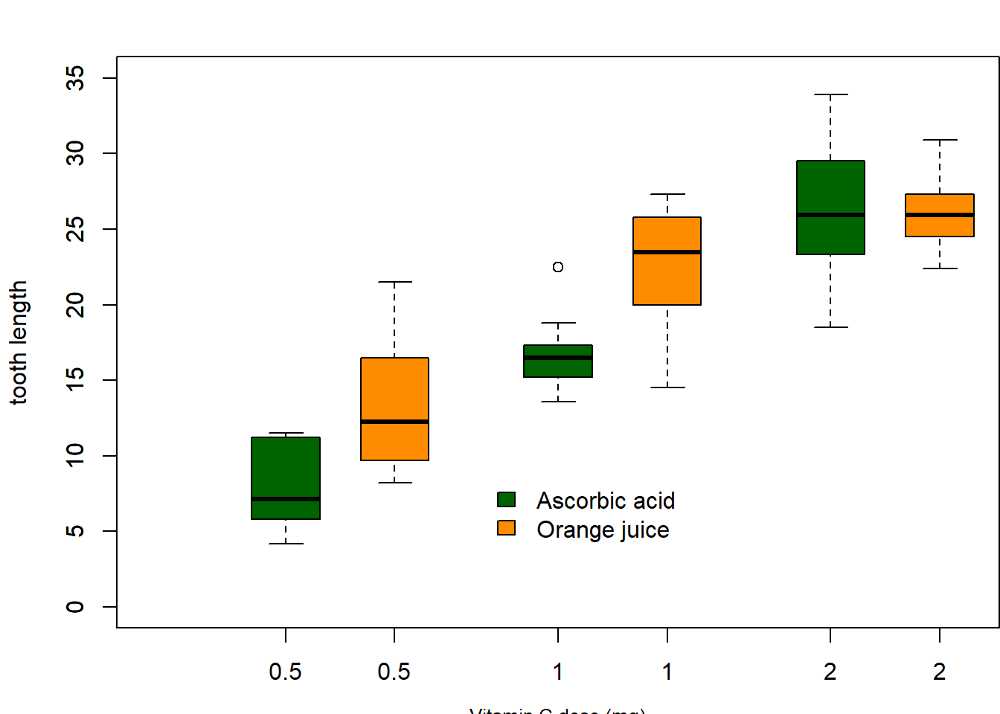
par(mar=c(5.1, 4.1, 4.1, 2.1))
Perspective Plot
# Persp
x <- seq(-10, 10, length= 30)
y <- x
f <- function(x,y) { r <- sqrt(x^2+y^2); 10 * sin(r)/r }
z <- outer(x, y, f)
z[is.na(z)] <- 1
# 0.5 to include z axis label
par(mar=c(0, 0.5, 0, 0), lwd=0.5)
persp(x, y, z, theta = 30, phi = 30,
expand = 0.5)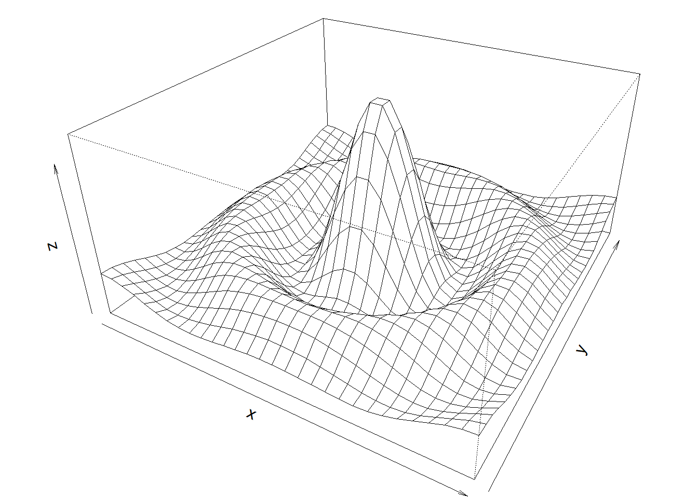
par(mar=c(5.1, 4.1, 4.1, 2.1), lwd=1)
# Compute the average height of each facet (small grid square)
nrz <- nrow(z)
ncz <- ncol(z)
zfacet <- (z[-1, -1] + z[-1, -ncz] + z[-nrz, -1] + z[-nrz, -ncz]) / 4
# Build a color gradient and map facet heights onto it
color <- colorRampPalette(c("darkblue", "skyblue", "white"))(100)
facetcol <- cut(zfacet, 100)
par(mar=c(0, 0.5, 0, 0), lwd=0.5)
persp(x, y, z, theta = 30, phi = 30,
expand = 0.5, col = color[facetcol])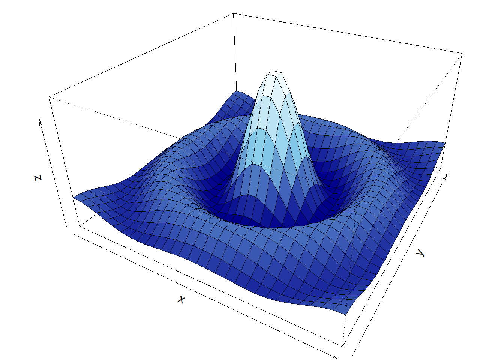
par(mar=c(5.1, 4.1, 4.1, 2.1), lwd=1)
Pie Chart
par(mar=c(0, 2, 1, 2), xpd=FALSE, cex=0.5)
pie.sales <- c(0.12, 0.3, 0.26, 0.16, 0.04, 0.12)
names(pie.sales) <- c("Blueberry", "Cherry",
"Apple", "Boston Cream", "Other", "Vanilla")
pie(pie.sales, col = gray(seq(0.3,1.0,length=6))) 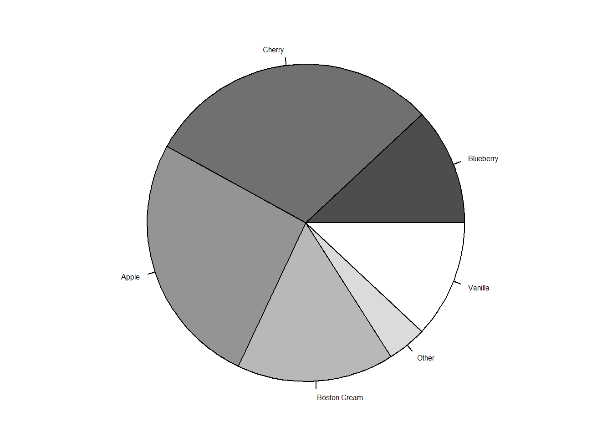
par(mar=c(0, 2, 1, 2), xpd=FALSE, cex=0.5)
pie.sales <- c(0.12, 0.3, 0.26, 0.16, 0.04, 0.12)
names(pie.sales) <- c("Blueberry", "Cherry",
"Apple", "Boston Cream", "Other", "Vanilla")
# Set the color
pie.colors <- c(Blueberry = "blue",
Cherry = "darkred",
Apple = "red",
"Boston Cream" = "tan",
Other = "gray70",
Vanilla = "cornsilk")
pie(pie.sales, col = pie.colors[names(pie.sales)], # Change font & cex
cex = 2.0, font = 4)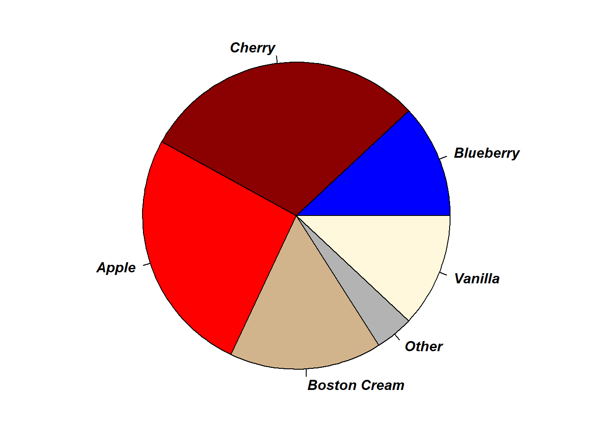
2. Exercise the plotting functions
Setting
# City of Seoul, Gender-responsive Budget (GRB) 2025 Data
grb <- read_excel("GRB2025.xlsx", sheet = "Sheet1", skip = 3)
View(grb)
names(grb)[1] "Sector (English)"
[2] "No. of Projects\r\n(2025)"
[3] "2025 Budget Bill\r\n(USD million)"
[4] "2024 Original Budget\r\n(USD million)"# Naming
names(grb) <- c("sector", "projects", "budget_usd", "budget_usd_2024")
names(grb) # confirm it worked[1] "sector" "projects" "budget_usd" "budget_usd_2024"# Setting
grb <- grb[!grepl("Exchange rate", grb$sector), ]
grb <- na.omit(grb)
nrow(grb) # should print 13[1] 13
Set up the Canvas
# Set up canvas: margins, layout
par(mar = c(10, 6, 4, 2))
# Base plot with axes suppressed, so we can add our own
plot(1:nrow(grb), grb$budget_usd,
xlab = "", ylab = "2025 Budget (USD million)",
main = "Seoul GRB 2025: Budget by Sector",
axes = FALSE, pch = 16)
# Custom x-axis: sector names instead of numbers, rotated vertical
axis(1, at = 1:nrow(grb), labels = grb$sector, las = 2, cex.axis = 0.7)
axis(2)
# Add a box around the plot area
box()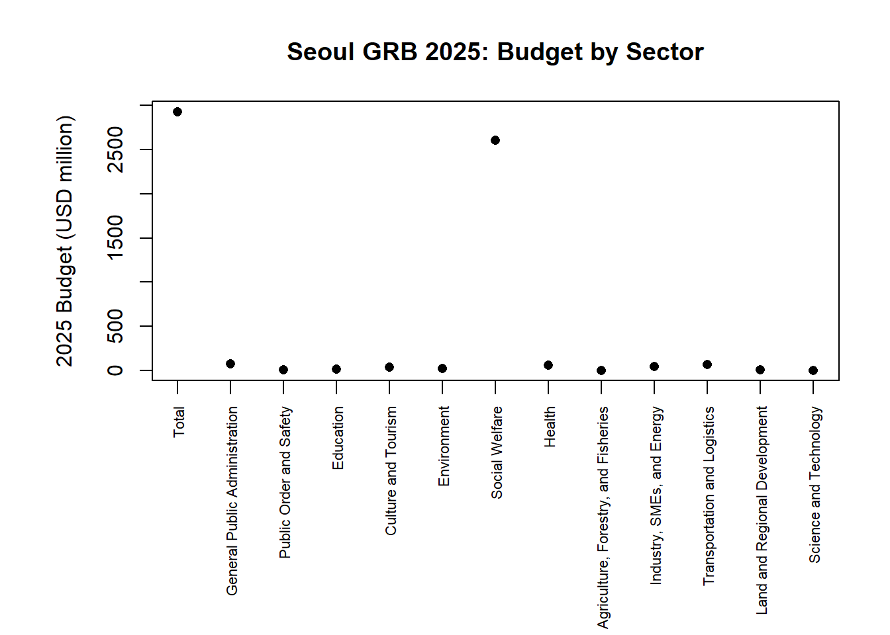
Draw whole Plots
Histogram
par(mar = c(5, 5, 4, 2)) # reset margins back to normal, no long labels needed here
grb_sub <- grb[grb$sector != "Total", ] # exclude Total, keep only the 12 sub-sectors
hist(grb_sub$budget_usd,
breaks = 6,
col = "lightgreen",
xlab = "2025 Budget (USD million)",
main = "Distribution of Sector Budgets (excl. Total)",
ylim = c(0, 12))
# Horizontal dotted gridlines at each frequency level
for (y in seq(0, 12, by = 2)) {
lines(c(0, 3000), c(y, y), lty = 3, col = "gray50")
}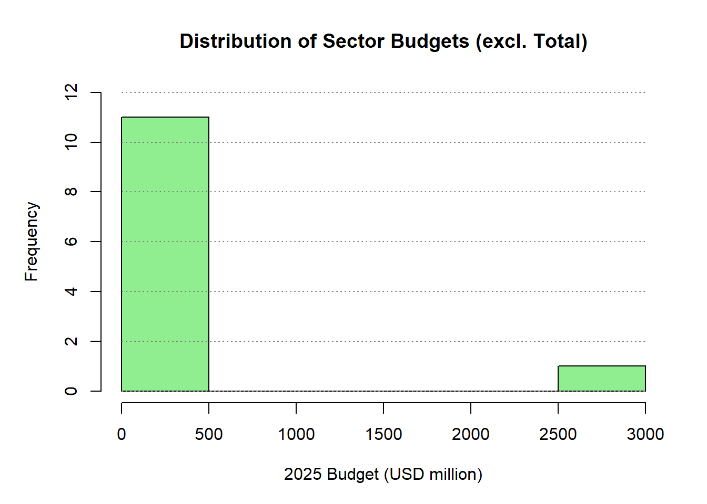
Box Plot
boxplot(grb_sub$budget_usd,
horizontal = TRUE,
col = "lightblue",
xlab = "2025 Budget (USD million)",
main = "Spread of Sector Budgets (excl. Total)",
ylim = c(0, 200))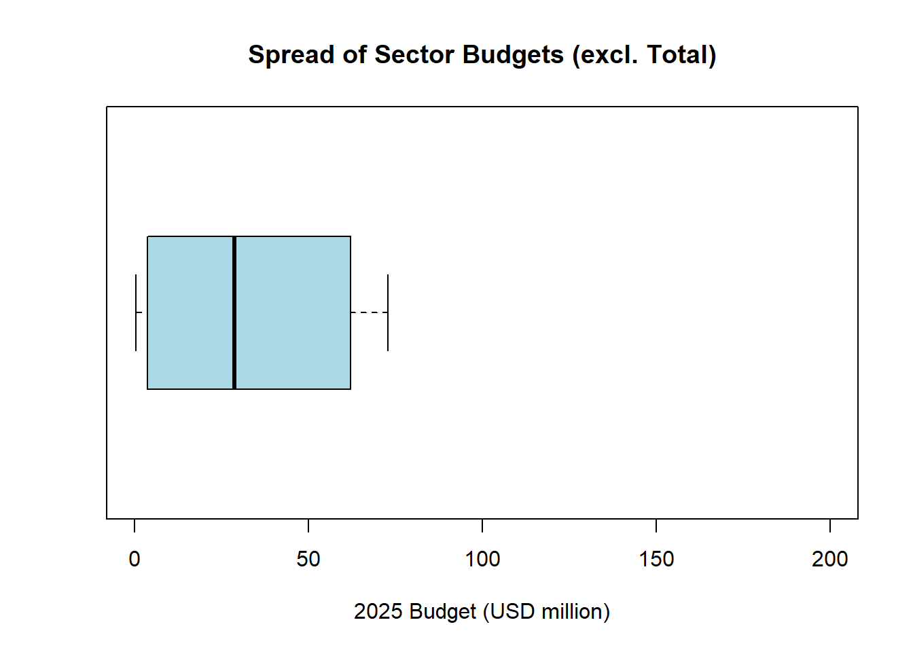
Pie Chart
# xpd=TRUE lets drawing go outside the plot box
par(mar = c(1, 1, 3, 10), xpd = TRUE)
pie(grb_sub$budget_usd,
labels = NA,
col = hcl.colors(nrow(grb_sub), palette = "Set 2"),
main = "Seoul GRB 2025: Budget Share by Sector",
radius = 0.8) # slightly smaller pie, more room around it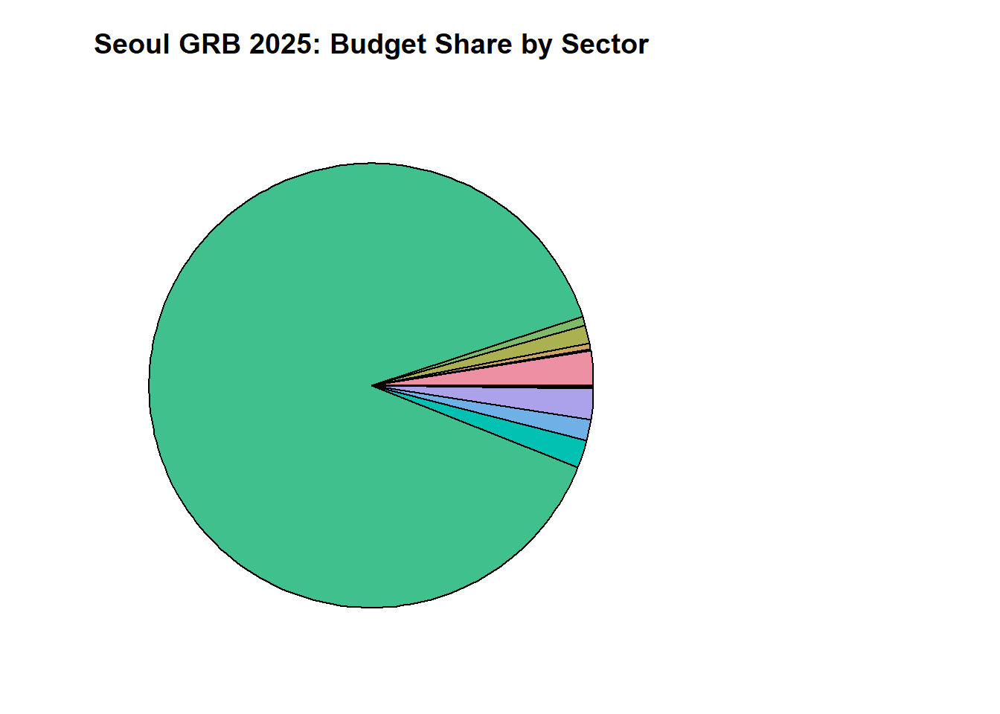
par(xpd = FALSE) # reset, so future plots behave normally
Perspective Plot
grb <- read_excel("GRB2025.xlsx", sheet = "Sheet1", skip = 3)
names(grb) <- c("sector", "projects", "budget_usd", "budget_usd_2024")
# Clean out the exchange-rate note row and any blanks, same as before
grb <- grb[!grepl("Exchange rate", grb$sector), ]
grb <- na.omit(grb)
nrow(grb) # should be 13 (Total + 12 sectors)[1] 13grb_sub <- grb[grb$sector != "Total", ]
nrow(grb_sub) # should be 12[1] 12
x <- 1:nrow(grb_sub)
y <- c(2024, 2025)
z <- cbind(grb_sub$budget_usd_2024, grb_sub$budget_usd) # 12 x 2 matrix
par(mar = c(2, 2, 3, 2))
persp(x, y, z,
theta = 30, phi = 20, expand = 0.6,
col = "lightgreen",
xlab = "Sector", ylab = "Year", zlab = "Budget (USD million)",
main = "Seoul GRB: Budget by Sector, 2024 vs 2025")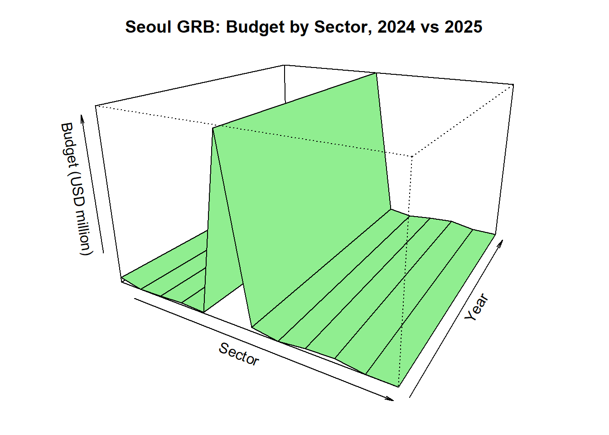
# Exclude Social Welfare
grb_persp <- grb_sub[grb_sub$sector != "Social Welfare", ]
nrow(grb_persp) # should be 11[1] 11x <- 1:nrow(grb_persp)
y <- c(2024, 2025)
z <- cbind(grb_persp$budget_usd_2024, grb_persp$budget_usd)
par(mar = c(2, 2, 3, 2))
persp(x, y, z,
theta = 30, phi = 20, expand = 0.6,
col = "lightblue",
xlab = "Sector", ylab = "Year", zlab = "Budget (USD million)",
main = "Seoul GRB: Budget by Sector (excl. Social Welfare), 2024 vs 2025")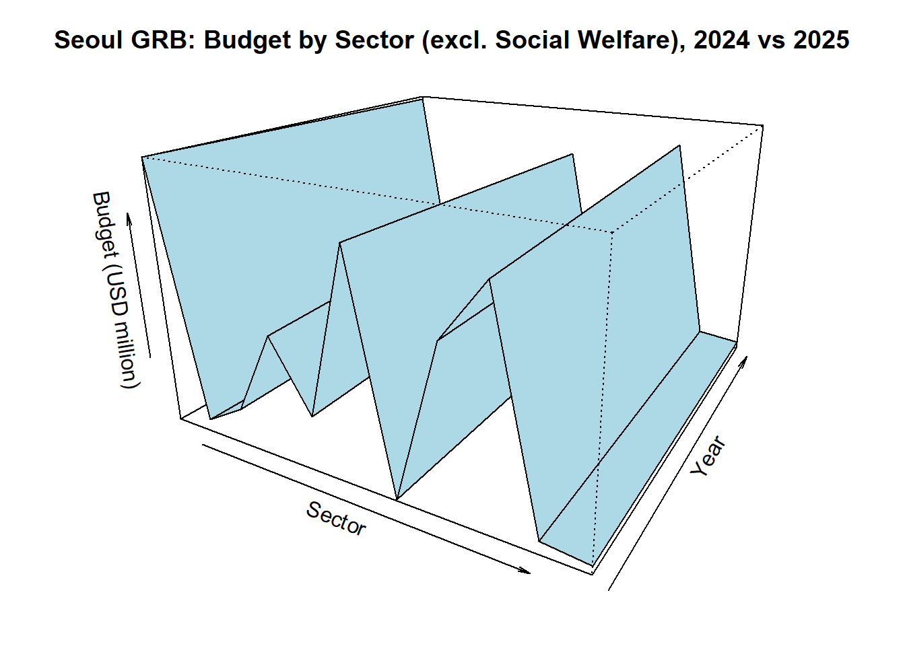
Add to an existing plot
Points
par(mar = c(10, 6, 4, 2))
plot(1:nrow(grb_sub), grb_sub$budget_usd,
xlab = "", ylab = "US$ million",
main = "Gender-Responsive Budget by Sector (Seoul, 2025)",
type = "n", axes = FALSE)
axis(1, at = 1:nrow(grb_sub), labels = grb_sub$sector, las = 2, cex.axis = 0.5)
axis(2)
box()
points(1:nrow(grb_sub), grb_sub$budget_usd, pch = 16, col = "darkorange")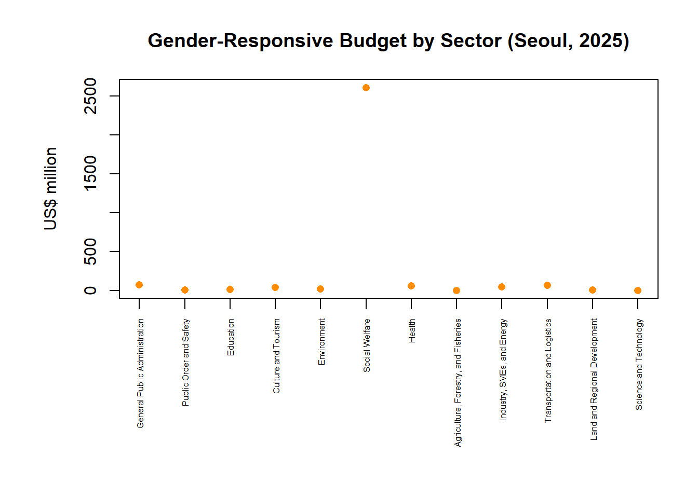
Lines
par(mar = c(10, 6, 4, 2))
plot(1:nrow(grb_sub), grb_sub$budget_usd,
xlab = "", ylab = "US$ million",
main = "Gender-responsive Budget by Sector (Seoul, 2025)",
type = "n", axes = FALSE)
axis(1, at = 1:nrow(grb_sub), labels = grb_sub$sector, las = 2, cex.axis = 0.5)
axis(2, at = seq(0, 3000, by = 500)) # main labeled ticks
axis(2, at = seq(250, 2750, by = 500), labels = FALSE, tcl = -0.25) # short unlabeled ticks
box()
points(1:nrow(grb_sub), grb_sub$budget_usd, pch = 16, col = "darkorange")
lines(1:nrow(grb_sub), grb_sub$budget_usd, col = "darkred", lty = 2)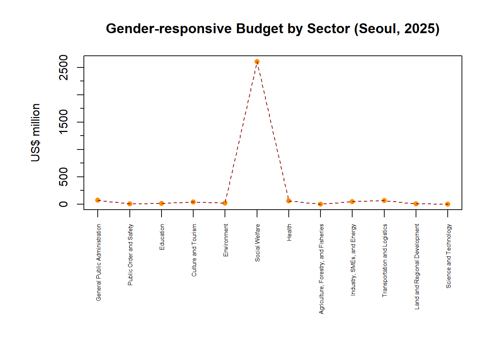
Annotate
Text, MTEXT
par(mar = c(12, 6, 4, 2)) # increase bottom margin from 10 to 12
plot(1:nrow(grb_sub), grb_sub$budget_usd,
xlab = "", ylab = "US$ million",
main = "Gender-responsive Budget by Sector (Seoul, 2025)",
type = "n", axes = FALSE,
ylim = c(0, 3000))
axis(1, at = 1:nrow(grb_sub), labels = grb_sub$sector, las = 2, cex.axis = 0.7)
axis(2, at = seq(0, 3000, by = 500))
axis(2, at = seq(250, 2750, by = 500), labels = FALSE, tcl = -0.25)
box()
points(1:nrow(grb_sub), grb_sub$budget_usd, pch = 16, col = "darkorange")
lines(1:nrow(grb_sub), grb_sub$budget_usd, col = "darkred", lty = 2)
sw_index <- which(grb_sub$sector == "Social Welfare")
text(sw_index, grb_sub$budget_usd[sw_index] + 150,
"$2,606m", cex = 0.7, font = 4)
mtext("*Source: City of Seoul, 2025 GRB Functional Summary Table",
side = 1, line = 11, cex = 0.6, col = "gray40") 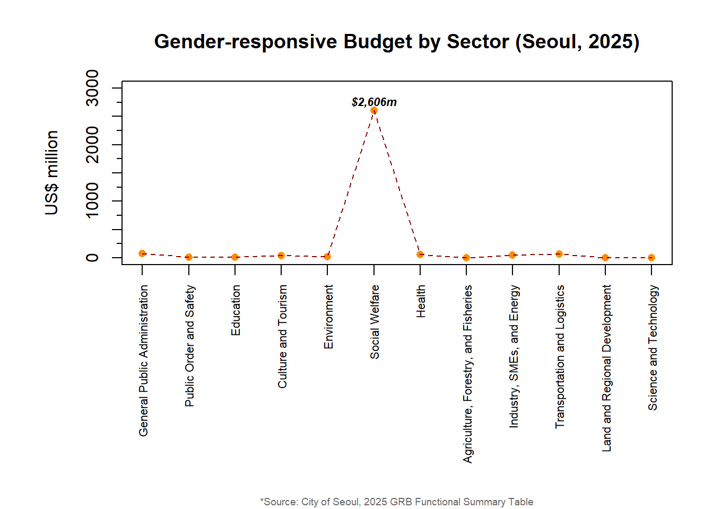
LEGEND
pie_colors <- hcl.colors(nrow(grb_sub), palette = "Set 2")
names(pie_colors) <- grb_sub$sector
par(mar = c(1, 1, 3, 10), xpd = TRUE)
pie(grb_sub$budget_usd,
labels = NA,
col = pie_colors[grb_sub$sector],
main = "Seoul GRB 2025: Budget Share by Sector",
radius = 0.8,
clockwise = TRUE,
init.angle = 90) # start at 12 o'clock
legend(1.2, 0.7, legend = names(pie_colors),
fill = pie_colors,
cex = 0.8, bty = "n")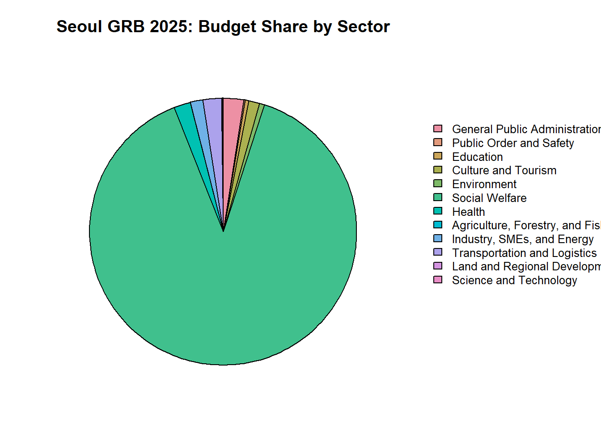
par(xpd = FALSE)
3. Data: Happy Planet Index
Setting
excel_sheets("Happy-Planet-Index-2006-2025-public-data-set.xlsx") [1] "Intro" "1. All countries" "2. Country Grapher"
[4] "3. Regions Graph" "4. Gender differences" "5. Data Sources"
[7] "Cont data" "All Data" "country codes"
[10] "Lookups" # Data Structure
hpi_raw <- read_excel("Happy-Planet-Index-2006-2025-public-data-set.xlsx",
sheet = "All Data", skip = 1)Warning: Expecting logical in V2436 / R2436C22: got 'A'Warning: Expecting logical in W2436 / R2436C23: got 'Year_lookup!A1:A2'Warning: Expecting logical in V2437 / R2437C22: got 'B'Warning: Expecting logical in W2437 / R2437C23: got 'Year_lookup!B1:B2'Warning: Expecting logical in V2438 / R2438C22: got 'C'Warning: Expecting logical in W2438 / R2438C23: got 'Year_lookup!C1:C2'Warning: Expecting logical in V2439 / R2439C22: got 'D'Warning: Expecting logical in W2439 / R2439C23: got 'Year_lookup!D1:D2'Warning: Expecting logical in V2440 / R2440C22: got 'E'Warning: Expecting logical in W2440 / R2440C23: got 'Year_lookup!E1:E2'Warning: Expecting logical in W2441 / R2441C23: got 'Year_lookup!F1:F2'Warning: Expecting logical in V2442 / R2442C22: got 'G'Warning: Expecting logical in W2442 / R2442C23: got 'Year_lookup!G1:G2'Warning: Expecting logical in V2443 / R2443C22: got 'H'Warning: Expecting logical in W2443 / R2443C23: got 'Year_lookup!H1:H2'Warning: Expecting logical in V2444 / R2444C22: got 'I'Warning: Expecting logical in W2444 / R2444C23: got 'Year_lookup!I1:I2'Warning: Expecting logical in V2445 / R2445C22: got 'J'Warning: Expecting logical in W2445 / R2445C23: got 'Year_lookup!J1:J2'Warning: Expecting logical in V2446 / R2446C22: got 'K'Warning: Expecting logical in W2446 / R2446C23: got 'Year_lookup!K1:K2'Warning: Expecting logical in V2447 / R2447C22: got 'L'Warning: Expecting logical in W2447 / R2447C23: got 'Year_lookup!L1:L2'Warning: Expecting logical in V2448 / R2448C22: got 'M'Warning: Expecting logical in W2448 / R2448C23: got 'Year_lookup!M1:M2'Warning: Expecting logical in V2449 / R2449C22: got 'N'Warning: Expecting logical in W2449 / R2449C23: got 'Year_lookup!N1:N2'Warning: Expecting logical in V2450 / R2450C22: got 'O'Warning: Expecting logical in W2450 / R2450C23: got 'Year_lookup!O1:O2'Warning: Expecting logical in V2451 / R2451C22: got 'P'Warning: Expecting logical in W2451 / R2451C23: got 'Year_lookup!P1:P2'New names:
• `` -> `...15`
• `` -> `...21`
• `` -> `...22`
• `` -> `...23`names(hpi_raw) [1] "HPI rank"
[2] "Country"
[3] "ISO"
[4] "Continent"
[5] "Population"
[6] "Year"
[7] "Life Expectancy"
[8] "Life Satisfaction"
[9] "Ecological Footprint"
[10] "CoV adjusted ladder"
[11] "Adj Lad x Life Exp"
[12] "Extra HPLY (above min)"
[13] "CoV Adj Footprint"
[14] "HPLY/EF"
[15] "...15"
[16] "HPI"
[17] "Footprint category"
[18] "EF biocapacity for year"
[19] "GDP per capita"
[20] "GDP per capita (cleaned) - 2024 used for 2025"
[21] "...21"
[22] "...22"
[23] "...23" head(hpi_raw, 10)# A tibble: 10 × 23
`HPI rank` Country ISO Continent Population Year `Life Expectancy`
<dbl> <chr> <chr> <dbl> <dbl> <dbl> <dbl>
1 130 Central Africa… CAF 5 4529. 2009 14.7
2 NA Central Africa… CAF 5 5098. 2022 18.8
3 NA Central Africa… CAF 5 4945. 2019 31.5
4 NA Somalia SOM 5 12349. 2011 32.5
5 NA Central Africa… CAF 5 4623. 2014 40.3
6 NA Central Africa… CAF 5 5112. 2021 40.3
7 NA Lesotho LSO 5 1945. 2006 43.2
8 NA Lesotho LSO 5 1953. 2007 43.7
9 NA Lesotho LSO 5 1967. 2008 44.3
10 NA Eswatini SWZ 5 1084. 2006 44.6
# ℹ 16 more variables: `Life Satisfaction` <dbl>, `Ecological Footprint` <dbl>,
# `CoV adjusted ladder` <dbl>, `Adj Lad x Life Exp` <dbl>,
# `Extra HPLY (above min)` <dbl>, `CoV Adj Footprint` <dbl>, `HPLY/EF` <dbl>,
# ...15 <chr>, HPI <dbl>, `Footprint category` <dbl>,
# `EF biocapacity for year` <dbl>, `GDP per capita` <dbl>,
# `GDP per capita (cleaned) - 2024 used for 2025` <dbl>, ...21 <lgl>,
# ...22 <lgl>, ...23 <lgl>tail(hpi_raw, 10)# A tibble: 10 × 23
`HPI rank` Country ISO Continent Population Year `Life Expectancy`
<dbl> <chr> <chr> <dbl> <dbl> <dbl> <dbl>
1 19 Japan JPN 8 126305. 2020 84.7
2 108 Hong Kong HKG 8 7490. 2020 84.7
3 39 Japan JPN 8 124371. 2023 84.7
4 26 Japan JPN 8 123753. 2024 84.9
5 136 Hong Kong HKG 8 7471. 2018 85.0
6 NA Azerbaijan AZE 7 10398. 2025 74.7
7 111 Hong Kong HKG 8 7485. 2021 85.1
8 127 Hong Kong HKG 8 7486. 2019 85.3
9 124 Hong Kong HKG 8 7443. 2023 85.5
10 118 Hong Kong HKG 8 7415. 2024 85.6
# ℹ 16 more variables: `Life Satisfaction` <dbl>, `Ecological Footprint` <dbl>,
# `CoV adjusted ladder` <dbl>, `Adj Lad x Life Exp` <dbl>,
# `Extra HPLY (above min)` <dbl>, `CoV Adj Footprint` <dbl>, `HPLY/EF` <dbl>,
# ...15 <chr>, HPI <dbl>, `Footprint category` <dbl>,
# `EF biocapacity for year` <dbl>, `GDP per capita` <dbl>,
# `GDP per capita (cleaned) - 2024 used for 2025` <dbl>, ...21 <lgl>,
# ...22 <lgl>, ...23 <lgl>
hpi <- hpi_raw[, !names(hpi_raw) %in% c("...15", "...21", "...22", "...23")]
names(hpi) [1] "HPI rank"
[2] "Country"
[3] "ISO"
[4] "Continent"
[5] "Population"
[6] "Year"
[7] "Life Expectancy"
[8] "Life Satisfaction"
[9] "Ecological Footprint"
[10] "CoV adjusted ladder"
[11] "Adj Lad x Life Exp"
[12] "Extra HPLY (above min)"
[13] "CoV Adj Footprint"
[14] "HPLY/EF"
[15] "HPI"
[16] "Footprint category"
[17] "EF biocapacity for year"
[18] "GDP per capita"
[19] "GDP per capita (cleaned) - 2024 used for 2025"sort(unique(hpi$Year)) [1] 2006 2007 2008 2009 2010 2011 2012 2013 2014 2015 2016 2017 2018 2019 2020
[16] 2021 2022 2023 2024 2025table(hpi$Year) # how many countries have data per year
2006 2007 2008 2009 2010 2011 2012 2013 2014 2015 2016 2017 2018 2019 2020 2021
157 157 157 157 157 157 157 157 157 157 157 157 157 157 157 156
2022 2023 2024 2025
154 153 153 153
2025 Data
# 2025
hpi_year <- hpi[hpi$Year == 2025, ]
nrow(hpi_year)[1] 153# Check for missing values in key columns
colSums(is.na(hpi_year)) HPI rank
19
Country
0
ISO
0
Continent
0
Population
0
Year
0
Life Expectancy
0
Life Satisfaction
14
Ecological Footprint
6
CoV adjusted ladder
14
Adj Lad x Life Exp
14
Extra HPLY (above min)
14
CoV Adj Footprint
6
HPLY/EF
19
HPI
19
Footprint category
0
EF biocapacity for year
0
GDP per capita
153
GDP per capita (cleaned) - 2024 used for 2025
1 # Which countries dropped out compared to earlier full-coverage years?
setdiff(hpi$Country[hpi$Year == 2019], hpi$Country[hpi$Year == 2025])[1] "Russia" "Ukraine" "Palestine, State of"
[4] "Israel" - I chose 2025, the most recent year available, since it best reflects current conditions. Coverage is reduced from earlier years. Russia, Ukraine, Palestine, and Israel all dropped out between 2019 and 2025, plausibly due to disrupted data collection amid conflict. Several columns have partial missing data in 2025 (HPI and HPI rank are missing for 19 countries; Ecological Footprint for 6). Notably, the raw GDP per capita column is entirely empty for 2025. I use the “GDP per capita (cleaned)” column instead, which the source workbook backfills with 2024 values, since true 2025 GDP figures were not yet available at time of publication.
Data Naming
class(hpi_year$Continent)[1] "numeric"unique(hpi_year$Continent)[1] 1 7 3 8 6 4 2 5country_codes <- read_excel("Happy-Planet-Index-2006-2025-public-data-set.xlsx", sheet = "country codes")New names:
• `` -> `...2`
• `` -> `...3`
• `` -> `...4`
• `` -> `...5`
• `` -> `...6`names(country_codes)[1] "ISO 3166[1]" "...2" "...3" "...4" "...5"
[6] "...6" head(country_codes, 20)# A tibble: 20 × 6
`ISO 3166[1]` ...2 ...3 ...4 ...5 ...6
<chr> <chr> <lgl> <lgl> <lgl> <chr>
1 Country name[5] Alpha-3 code[5] NA NA NA <NA>
2 Afghanistan AFG NA NA NA <NA>
3 Albania ALB NA NA NA <NA>
4 Algeria DZA NA NA NA <NA>
5 Argentina ARG NA NA NA
6 Armenia ARM NA NA NA <NA>
7 Australia AUS NA NA NA <NA>
8 Austria AUT NA NA NA <NA>
9 Azerbaijan AZE NA NA NA <NA>
10 Bahrain BHR NA NA NA <NA>
11 Bangladesh BGD NA NA NA <NA>
12 Belarus BLR NA NA NA <NA>
13 Belgium BEL NA NA NA <NA>
14 Benin BEN NA NA NA <NA>
15 Bhutan BTN NA NA NA <NA>
16 Bolivia BOL NA NA NA <NA>
17 Bosnia and Herzegovina BIH NA NA NA <NA>
18 Botswana BWA NA NA NA <NA>
19 Brazil BRA NA NA NA <NA>
20 Bulgaria BGR NA NA NA <NA> cont_data <- read_excel("Happy-Planet-Index-2006-2025-public-data-set.xlsx", sheet = "Cont data")New names:
• `` -> `...2`
• `` -> `...3`
• `` -> `...4`
• `` -> `...5`
• `` -> `...6`
• `` -> `...7`
• `` -> `...8`
• `` -> `...9`
• `` -> `...10`
• `` -> `...11`
• `` -> `...12`
• `` -> `...13`
• `` -> `...14`
• `` -> `...15`
• `` -> `...16`
• `` -> `...17`
• `` -> `...18`
• `` -> `...19`
• `` -> `...20`
• `` -> `...21`names(cont_data) [1] "Pop weighted average HPI (with estimates)"
[2] "...2"
[3] "...3"
[4] "...4"
[5] "...5"
[6] "...6"
[7] "...7"
[8] "...8"
[9] "...9"
[10] "...10"
[11] "...11"
[12] "...12"
[13] "...13"
[14] "...14"
[15] "...15"
[16] "...16"
[17] "...17"
[18] "...18"
[19] "...19"
[20] "...20"
[21] "...21"
Plotting
Basic Plotting
par(mar = c(5, 5, 4, 2))
plot(hpi_year$`Ecological Footprint`, hpi_year$`Life Expectancy`,
type = "n", axes = FALSE,
xlab = "Ecological Footprint (global hectares per capita)",
ylab = "Life Expectancy (years)",
main = "Life Expectancy vs. Ecological Footprint, 2025")
axis(1)
axis(2)
box()
points(hpi_year$`Ecological Footprint`, hpi_year$`Life Expectancy`,
pch = 16, col = rgb(0, 0.39, 0, alpha = 0.5))
# Smoothed trend line (drop rows with missing values first)
complete <- complete.cases(hpi_year$`Ecological Footprint`, hpi_year$`Life Expectancy`)
trend <- lowess(hpi_year$`Ecological Footprint`[complete],
hpi_year$`Life Expectancy`[complete])
lines(trend, col = "darkorange", lwd = 2, lty = 2)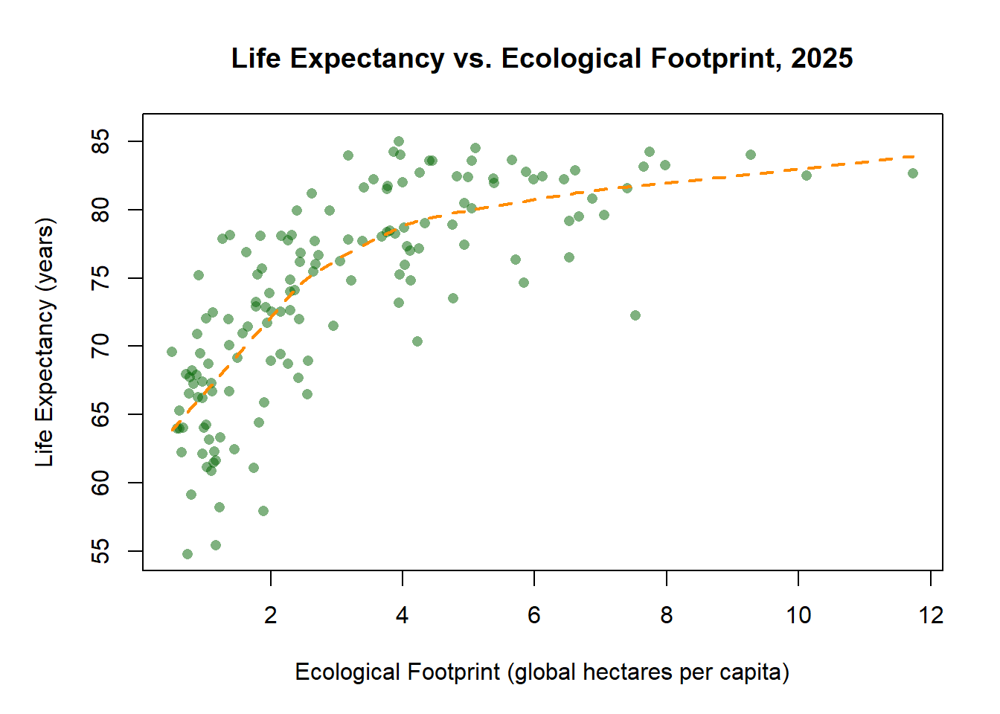
Histogram
par(mar = c(5, 5, 4, 2))
hist(hpi_year$`Life Expectancy`,
breaks = 15,
col = "lightgreen",
xlab = "Life Expectancy (years)",
main = "Distribution of Life Expectancy, 2025 (153 countries)",
ylim = c(0, 22))
abline(h = seq(0, 25, by = 5), lty = 2, col = "gray60")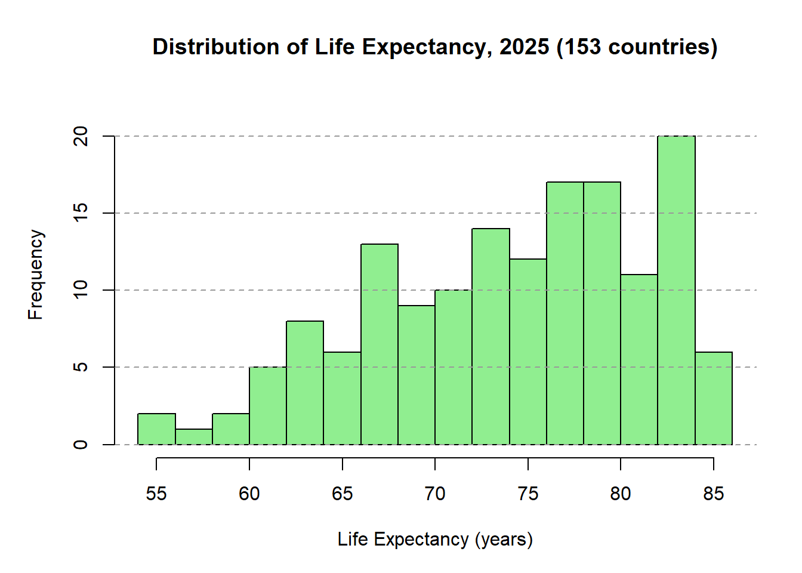
Box Plot
continent_map <- c(
"1" = "Latin America",
"2" = "North America & Oceania",
"3" = "Western Europe",
"4" = "Middle East",
"5" = "Africa",
"6" = "South Asia",
"7" = "Eastern Europe & Central Asia",
"8" = "East Asia"
)
hpi_year$Continent_name <- factor(continent_map[as.character(hpi_year$Continent)])
par(mar = c(11, 5, 4, 2))
boxplot(HPI ~ Continent_name, data = hpi_year,
col = "peachpuff",
xlab = "", ylab = "HPI Score",
main = "HPI Score by Continent, 2025",
las = 2,
cex.axis = 0.7)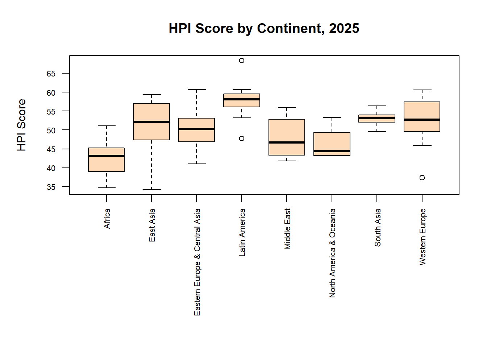